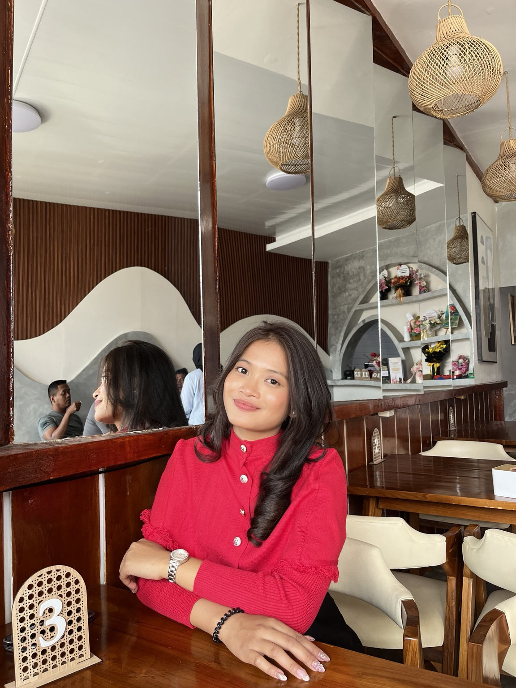

Mathematics Education
Mengembangkan kegiatan pembelajaran dan materi matematika yang terstruktur dan kontekstual.
Halo, saya Sisilia Br Nababan. Mahasiswa Pendidikan Matematika yang sedang membangun pengalaman melalui pembelajaran, teknologi, desain media, dan berbagai proyek akademik.

A little about me
...Saya tertarik pada cara membuat pembelajaran matematika menjadi lebih visual, kontekstual, dan mudah dipahami siswa.
Mahasiswa Pendidikan Matematika
Saya adalah mahasiswa Pendidikan Matematika yang sedang belajar dan berkembang untuk menjadi seorang pendidik yang mampu membuat matematika terasa lebih sederhana dan menyenangkan.
Selama perkuliahan, saya mengeksplorasi berbagai hal yang berkaitan dengan pembelajaran matematika, mulai dari penyusunan modul ajar, LKPD, media pembelajaran, presentasi, hingga pemanfaatan teknologi seperti Canva, GeoGebra, Google Classroom, dan basic web development.
Saya juga tertarik pada bagaimana siswa memahami konsep matematika, terutama ketika mereka menghadapi soal cerita dan harus mengubah masalah sehari-hari menjadi model matematika.
Kemampuan di bawah ini saya bangun melalui perkuliahan, tugas, proyek, dan pengalaman praktik.
Mengembangkan kegiatan pembelajaran dan materi matematika yang terstruktur dan kontekstual.
Membuat media visual dan bahan ajar untuk membantu konsep matematika lebih mudah dipahami.
Menggunakan teknologi sebagai pendukung proses belajar dan pengembangan aktivitas siswa.
Belajar membangun halaman web sederhana untuk kebutuhan pembelajaran dan personal portfolio.
Menyusun informasi menjadi presentasi yang rapi, visual, dan mudah diikuti.
Berpartisipasi dalam tugas kelompok, proyek akademik, microteaching, dan kegiatan KKN.
Bukan sekadar tugas, tetapi proses yang menunjukkan apa yang sedang saya pelajari dan kembangkan.
Merancang media pembelajaran untuk membantu siswa memahami konsep Sistem Persamaan Linear Dua Variabel melalui representasi visual, contoh, dan masalah kontekstual.
Menyusun perangkat pembelajaran yang memuat tujuan pembelajaran, aktivitas siswa, latihan, dan asesmen dengan pendekatan yang berpusat pada siswa.
Berpartisipasi dalam program KKN di Desa Pardomuan 1, Samosir, dengan kegiatan yang berkaitan dengan lingkungan, edukasi, dan pengembangan potensi desa wisata.
Membangun website portfolio pribadi sebagai ruang untuk mendokumentasikan perjalanan akademik, kemampuan, dan proyek yang sedang dikembangkan.
Portfolio ini bukan hasil akhir. Ini adalah dokumentasi dari proses belajar saya.
Menjalani perkuliahan dan mengembangkan pemahaman tentang matematika, pedagogi, kurikulum, asesmen, serta pembelajaran berbasis teknologi.
Mengembangkan RPP/modul ajar, LKPD, presentasi, media pembelajaran, dan aktivitas microteaching untuk berbagai materi matematika.
Belajar bekerja dalam tim dan berinteraksi langsung dengan masyarakat melalui program edukasi, lingkungan, dan pengembangan potensi desa.
Mulai memperdalam ketertarikan pada kesulitan siswa dalam memahami soal cerita, konsep matematika, dan membuat model matematika sebagai bekal menuju penelitian.
Terima kasih sudah melihat portfolio saya. Saya terbuka untuk belajar, berkolaborasi, dan mengembangkan ide-ide baru di bidang pendidikan matematika.